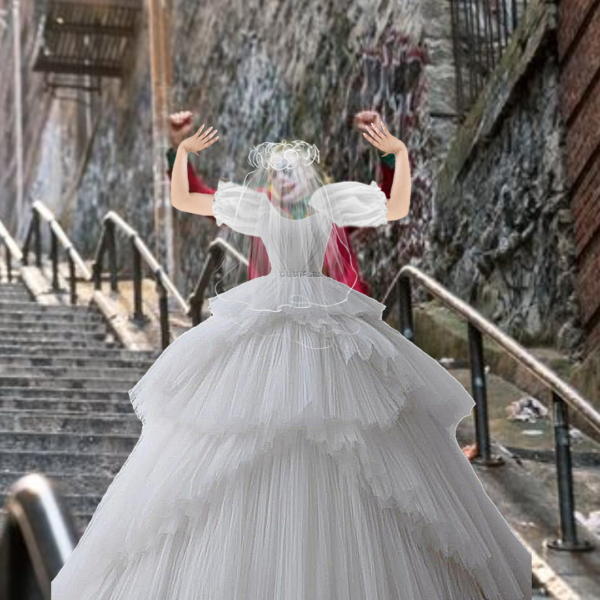

Uomo-Pistrelo3 è un fumetto comico e raffigura il nostro personaggio principale (L'uomo-pistrelo)
che deve picchiare i criminali utilizzando i suoi fortissimi possenti poteri. Non seguitelo al cinema.
Personaggi Principali Del Film3:
Uomo-Pistrelo (Terza Edizione)
L'uomo-pistrelo in questo film è agli sgoccioli per la battaglia finale contro Dio Brando.
nelle scene a venire dovrà prepararsi nello distruggere un nemico che lo ha sempre amato
per scegliere il bene del suo futuro marito. Questa scelta morale pesa sul subconscio
dell'uomo-pistrelo, ma esso non si farà scuotere dal'inutile buon senso, lui distruggerà
Dio Brando con le sue stesse mani. come ha giurato a farlo quando Dio stesso ha rapito
il suo amato Joker. Guardatelo mentre si dispera e combatte per la sicurezza di altre persone!
Questo è quello che un'eroe dovrebbe fare!
Il Joker (Marito)

Il Joker in questo film è la vittima delle malefatte del Dio Brando. Purtroppo lui stesso
non può più fare le sue malefatte da cattivo essendo chiuso in gabbia, ma lui sa che
l'uomo-pistrelo verrà a salvarlo. In un diluvio di emozioni immagina un finale
felice, peccato che non sapeva che questo film non avesse un finale!.
DIO Brando! (di nuovo di nuovo)
Dio Brando giunto alla fase finale della sua trasformazione diventa ancora più sexy e per
far soffrire di più l'uomo-pistrelo simulerà un matrimonio con il Joker. Ma questo all'uomo-pistrelo
non piacerà tanto che cercherà in tutti i modi di fermarlo. Dio purtroppo non si accorse
dei nuovi poteri ottenuti dall'uomo-pistrelo per via del calice di orato per via di questo,
si è sempre speculato un finale in cui Dio venne distrutto malamente dall'uomo-pistrelo
e quindi si fosse raggiunto un finale positivo. Purtroppo non sappiamo se alla resa dei
conti Dio verrà sconfitto dall'uomo-pistrelo oppure riuscirà nel suo intento a vivere
una vita felice con esso.